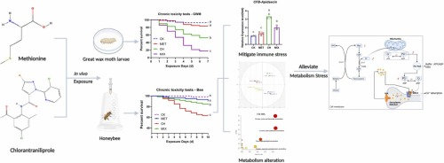
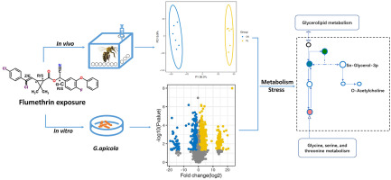

Zhaoyong Liu
About Me
I am a Master student majoring Biology and Medicine at College of Science & Technology, Hebei Agricultural University (China), working with Lec. Yue Wei. I worked as a research intern at the institute of apicultural research, Chinese Academy of Agricultural Sciences (China). leading by Assoc. Prof. Kai Wang and Assoc. Prof. Suzhen Qi. Prior to that, I earned my bachelor degree from College of Science & Technology, Hebei Agricultural University (China).
Research Interests
- metabolism: metabolomics, metabolic network/pathway analysis.
- gut microorganisms: microbiome.
- multi-omics: metabolome and microbiome association analysis.
News
- [jun. 2024] My paper about microbiota alteration (using microbiome) is submitted to Pesticide Biochemistry and Physiology (Under Review, IF = 4.2).
- [Nov. 2023] My paper about metabolic mechanisms explored (using metabolomics) is accepted to Ecotoxicology and Environmental Safety (IF = 6.9).
- [Feb. 2023] I successfully applied and served as an host of the provincial innovation funding project: the Hebei Province Graduate Innovation Funding Project (Grant No. CXZZSS2023054).
Publications
-
 PESTIC BIOCHEM PHYS
Pesticide Biochemistry and Physiology (PESTIC BIOCHEM PHYS), 2024.Under Review
PESTIC BIOCHEM PHYS
Pesticide Biochemistry and Physiology (PESTIC BIOCHEM PHYS), 2024.Under Review -
 ECOTOX ENVIRON SAFEEcotoxicology and Environmental Safety (ECOTOX ENVIRON SAFE), 2023.Published
-
 Chemosphere
-
 ENVIRON POLLUT
Environmental Pollution (ENVIRON POLLUT), 2022.Published
ENVIRON POLLUT
Environmental Pollution (ENVIRON POLLUT), 2022.Published
|
|
|
|
Professional Services
Teaching Assistant
Nov. 2023: Teaching assistant for the course "Biochemistry Experiment" at Hebei Agricultural University.
Others
I like swimming, basketball, and guitar.Powered by Jekyll and Minimal Light theme.